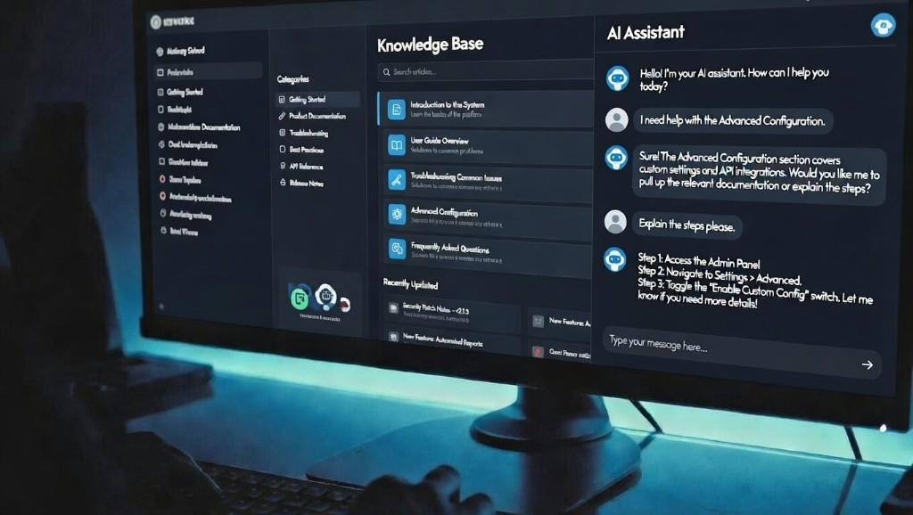

I Built a Knowledge Base That My AI Can Actually Use

How a folder of markdown files became the most productive tool in my workflow
I have a repository on my computer that has no code, only markdown files. It contains the vision for my current project. The files capture the complete context and history of every conversation, every document, and everything I've learned in the process of building over the last several weeks. I can open it in Cursor and work on it with Claude the same way a developer works on a codebase, or open it in the Claude app and it instantly has full context. Any agent I start can get up to speed on my entire project in about 3 seconds.
That folder is the most productive tool in my workflow. But it started as something else.
The Master Thread
A few months ago I started a long conversation in Claude. It was supposed to be a quick product brainstorm, but I kept going back to it. Over weeks, it became the place where I worked through everything: product vision, feature definitions, marketing copy, competitive research. I iterated on ideas there, refined them, and produced dozens of essential documents.
Eventually I started using it to generate prompts for other agents to actually build things. And then I had it breaking down tasks for me to perform. It was my guide. A single brain acting as an extension of my own intelligence. The single source of truth for the whole project. A place where I'd loaded in, iterated on, and refined all my best ideas.
For a while, it was the best tool I had.
Where It Broke
The master thread could only do one thing at a time. Whenever I needed to kick off another agent for a separate task, I'd ask the master thread for a context prompt. That helped, but the new agent never had the richness of context to work independently. I'd consistently have to go back to the master thread to produce more prompts, or more often than not, provide the missing context myself.
And there's a harder limit: one thread can only go so long before it starts losing its own context. The very thing that made the master thread valuable, all that accumulated knowledge, was slowly degrading as the conversation grew.
I started asking myself: what if every new agent could be up to speed on everything immediately? What if I had a complete record of all my conversations and documents stored in git, so the context would never be lost, and I could pick up with any agent, any time, and drive the project forward?
The Folder
I asked Claude to package everything up: the entire conversation, plus all the documents we'd built together over the previous few weeks to define product features, scope, and research. It pulled out every topic, decision, spec, and concept, organized them into subdirectories, and gave me a downloadable folder. I dropped it into a git repo, opened it in Cursor, and started iterating from there.
The knowledge base is what the master thread wanted to be. Same content, same context, same history. But now any agent can read it in 30 seconds. I can launch five agents in parallel and they all have full context immediately. No prompt generation, no copy-pasting from an old thread.
How I Work With It Now
The division of labor is simple. I work on the things I care about: vision documents, marketing copy, product strategy, blog posts. The AI drafts them based on our conversation and everything it already knows from the repo. I review, make corrections, and approve. The agent commits the file to git.
Beyond the documents I ask for, Claude appears to be designed to maintain a knowledge repo, possibly as an extension of how it maintains context within a single thread. When I started using it this way, it explained its own inner workings: it creates conversation logs, decision records, session indexes, a table of contents. I asked it to record every message in some chats, and it does. It keeps every file under 500 lines automatically, which means it can read any file in full in a single pass without losing context. It almost feels like a built-in feature. The model understands that a knowledge base works better when the files stay short, organized, and current, and it just handles that on its own. It makes everything work seamlessly.
The Part That Surprised Me
I assumed the agent would navigate the knowledge base the way I would, following links between documents, reading one page and jumping to the next. That's how a human reads a wiki.
The agent does something completely different. It searches.
When it needs information, it runs parallel keyword searches across every file in the repo simultaneously. If I ask about a specific concept, it greps for that term across all 30+ files and gets back every file and line where it appears. Then it reads the relevant files in full, in parallel. Two tool calls and it has complete context on anything.
This is why consistent terminology matters. If I call the same concept "pattern matching" in one document, "regex layer" in another, and "deterministic parsing" in a third, the agent has to run three separate searches. If I always call it "regex layer," one search finds everything.
The One Thing I'd Do From Day One
Create a terminology registry with the AI. A single file that lists the canonical name for every concept in the project. Then have the agent add it to its own context so it holds you to the registry going forward. If you slip and call something by the wrong name in a new document, the agent catches it and corrects it. Adding a new concept is as simple as telling the agent to register a new keyword or phrase. That's all it takes.
Everything else about maintaining the knowledge base, the AI handles. But terminology consistency is the one thing that makes the whole system work, and it's the one thing only you can decide.
Why Markdown, Why Git
Markdown is plain text. Every AI model can read it natively without an API integration or export step. I can open it in Cursor, in the Claude app, or in any text editor.
Git gives me version history for free. I can see when a decision changed, what the previous version said, and who (or what) wrote it. When the agent drafts content, I review the diff before committing. The context never gets lost, and the project can survive any conversation ending.
The Takeaway
The best thing I did for my AI workflow was giving the model something to remember.
If you're working seriously with AI and you have a master thread you keep going back to, you already have the raw material. Use the prompt below to turn it into a knowledge base. Drop the folder into a git repo, open it in Cursor or the Claude app, and start working. Every conversation after that starts warm with rich and extensive context.
Starter Prompt
Paste this at the end of a long conversation to seed your knowledge base:
Review everything we've discussed in this conversation, and all documents and artifacts we've produced together. Create a downloadable folder of organized markdown files that captures the full project as a knowledge base. Include:This folder will be opened in Cursor or the Claude desktop app as a persistent knowledge base for future sessions. Optimize it for AI agent searchability and comprehensive context review.
- A README.md that acts as a table of contents with one-line descriptions of every file, and keep it updated as files change
- Separate subdirectories by domain (e.g. vision, products, technical, research, marketing, decisions)
- One file per topic, each starting with a one-line summary
- A decisions.md log with every decision we made, dated, with reasoning
- A glossary.md with canonical terminology for every concept we discussed — enforce this terminology in all future documents
- Keep every file under 500 lines
- Use descriptive filenames (e.g. intent-processing.md, not notes.md)